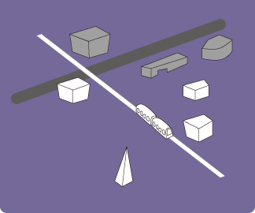
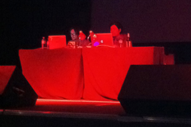

動いて魅せる。
「アルスエレクトロニカ2011」では、様々な時間と場所で多彩なパフォーマンスとライブが開催されました。DJやバンドによるライブ、オーケストラとビジュアルムービーのコラボレーション、綿密に計算された音で再生されるドローン、独自開発の楽器を用いた演奏、観客に自転車を漕がせてライブの電源を捻出するパフォーマンス...など、どれもアーティストの個性が如実に現れており、最高のインスピレーションを観客に振りまいていました。芸術性を重視したインテリジェンスなライブはもちろん、エンターテイメントとしてのパフォーマンスを重視したライブアクトをも多数盛り込んだアルスの懐の深さのもと、特に気になったライブをピックアップしました。

mirage00
まったく所属の異なる4名のプロジェクトメンバーよって製作されたライブパフォーマンスシステム。このプレイヤーは、コントラバスのように本体を抱えながら本体前面のタッチスクリーンを操作することで、ループサウンドとビジュアルの再生・切替え・エフェクトの適用といったアクションを自由に行う事ができるのです。また、ビジュアルは本体上部のプロジェクターから本体の周囲にオールレンジで投射され、ステージ全体が映像の波に包まれます。ボタン類の操作を廃した本体からは、まさしく体全体を使って操作する感覚を得ることができます。「プレイヤーが自らステージで踊る」「観客とプレイヤーの垣根を無くす」という視点が生かされた、先鋭的かつ親しみのあるコンセプトが実体化した作品。実は、Kinectを装備していたりと高い機能拡張が備えられており、今後の進化にも注目したい。

Photo by rubra
Gameboy Music Club
 ゲームボーイの音源と生演奏のセッションで本格的フロア仕様のサウンドをプレイ。突然壇上で大合唱が始まったりと、クールさと奔放さが融合したステージ。
ゲームボーイの音源と生演奏のセッションで本格的フロア仕様のサウンドをプレイ。突然壇上で大合唱が始まったりと、クールさと奔放さが融合したステージ。

Daito Manabe
 特別な映像表現はなく、ただ静かに壇上でPCによるDJを展開。小難しさ無しのエンターテイメントで、若いオーディエンスが激しく反応していたのが印象的。
特別な映像表現はなく、ただ静かに壇上でPCによるDJを展開。小難しさ無しのエンターテイメントで、若いオーディエンスが激しく反応していたのが印象的。
Photo by 2011 paulsobota.com
Tesra Orchestra
 スラコイルのスパークで音階を奏で、BGMと同期させることで演奏。アクターの何とも言えない踊りと、淡々と奏でられる有名フレーズの奇妙な組み合わせが乙。
スラコイルのスパークで音階を奏で、BGMと同期させることで演奏。アクターの何とも言えない踊りと、淡々と奏でられる有名フレーズの奇妙な組み合わせが乙。
Open Reel Ensemble
 旧型のオープンリール機をインターフェースに用い、ガチガチのエレクトロミュージックにアナログさを融合させた、ビジュアルも刺激的なパフォーマンス。
旧型のオープンリール機をインターフェースに用い、ガチガチのエレクトロミュージックにアナログさを融合させた、ビジュアルも刺激的なパフォーマンス。
Photo by rubra
Bruckner Orchester Linz
 壮大かつ疾走感のあるオーケストレーションと白と青のミニマルな映像表現のサウンド&ビジュアルライブ。目と耳がシンクロする感覚が高揚感を生む。
壮大かつ疾走感のあるオーケストレーションと白と青のミニマルな映像表現のサウンド&ビジュアルライブ。目と耳がシンクロする感覚が高揚感を生む。
Photo by rubra
Hetapiano
 ピアノ自動演奏システム「Deus Cantando」を円周上に並べて一斉に演奏。ソロ演奏もセンターで行われ、アナログ演奏へのこだわりが感じられた。
ピアノ自動演奏システム「Deus Cantando」を円周上に並べて一斉に演奏。ソロ演奏もセンターで行われ、アナログ演奏へのこだわりが感じられた。